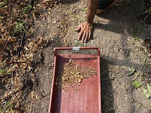
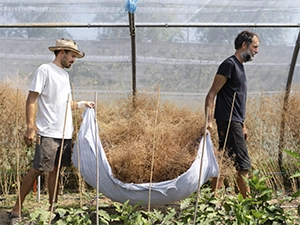
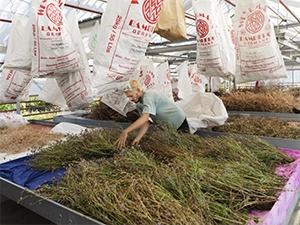

Semences de pays
Semences de pays développe une production de semences reproductibles, rustiques et adaptées à une agriculture biologique proche des cycles de la nature, en collaboration avec les initiatives nourricières de proximité.
  Nos semences
Découvrez nos trésors de biodiversité sur le shop!